OUTSIDE
Ellebo Housing Renovation
FORA + Beth Hughes
Competition Finalist - Social Housing - Ellebo - 2013
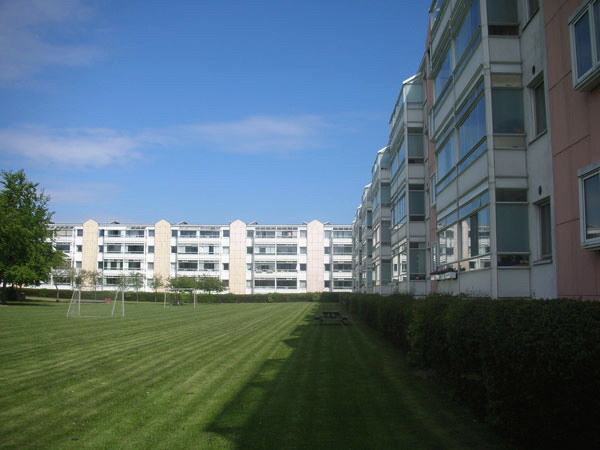
Introduction
Ellebo Housing Estate, with its simple urban structure, is a built manifesto of the modern ideal. Collective blocks with shared facilities assembled around a large communal outdoor area that can be enjoyed by all. The refurbishment ahead is the proof that flexibility is still its strongest quality: the buildings have already survived changes made in the 1990’s, and still offer a valid base for a new beginning.
The 1990’s renovation altered the technical performance of the building and was the first step towards improving the spatial qualities of the dwelling. The introduction of closed balconies extended the living spaces but also separated the residents from the outside. This cut explains the gap between the private and the collective realm.
The renovation of the buildings presents the opportunity to mend this rift, and reintroduce the communal and outdoor space as a fundamental quality of the place.
The design strategy relies on three principles: 1) community, 2) extend, 3) density.
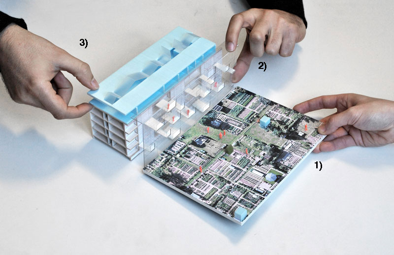
1) Community
The central green – a vase area of valuable open space - has enormous potential as a community resource that is currently not utilised. A collective program is injected into the inner plot: sports fields, children playgrounds, sitting areas; the communal building and other collective facilities are moved into the middle of the plot providing space for gatherings and events.
Through a participative process, surrounding the community facilities, the existing green field is divided into allotments/community gardens – the ground becomes a projection of the building’s façades. Each house starts by having its own allotment but through time, neighbours start joining gardens and share responsibilities over the maintenance of small plots of land within a bigger scale collective garden.
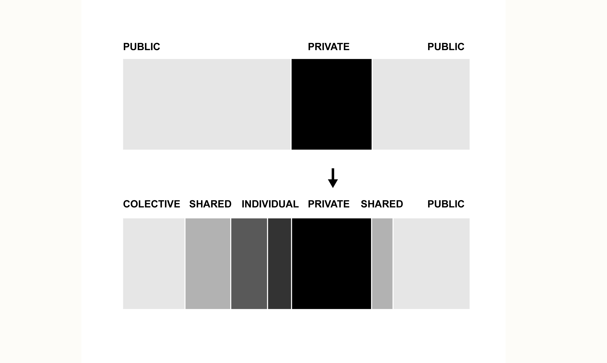
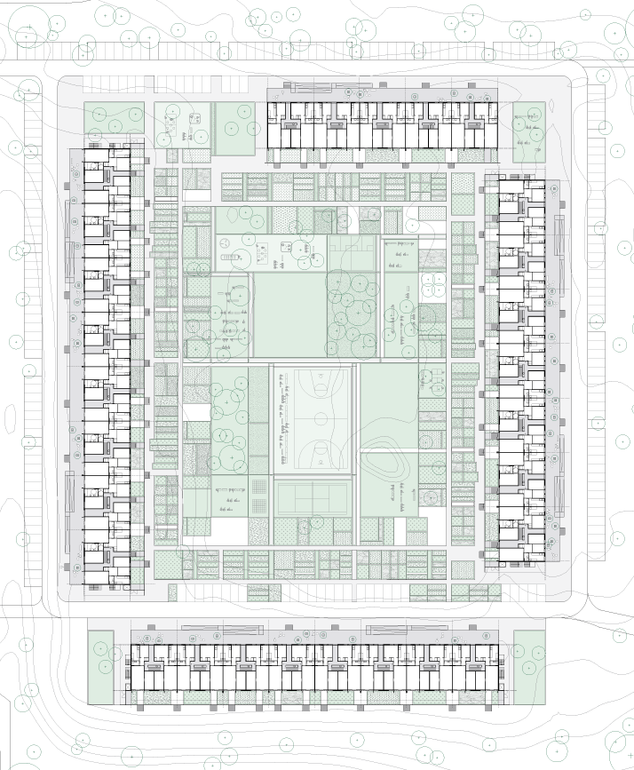
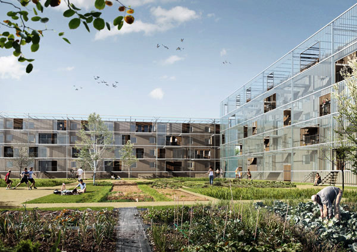
2) Extend
How to improve the spatial quality of the existing dwellings without changing the interior layout?
A new layer of exterior space is added to the existing buildings: each flat is provided with a generous new balcony, an extension of the interior space. These balconies are protected by a glass façade, sheltering them from the elements: a semi-exterior condition is generated, allowing for the space to be used most of the year - a collective winter garden. Neighbours animate this communal space by extending their private realms to the balconies. A mosaic of diversity becomes the new façade of the building.
During the colder months the winter garden may be totally enclosed, forming a buffer zone from the exterior cold. In the summertime, glass windows in front of the balconies can slide away, and operable roof top panels of the winter garden can open, allowing for ventilation and a direct relationship with the exterior gardens.
Ellebo neighbours can actively participate in the definition of the collective winter garden layout: inhabitants decide if they want to have an individual balcony or share it with the neighbour: a community negotiation process at the scale of each block, engaging inhabitants in the design process.
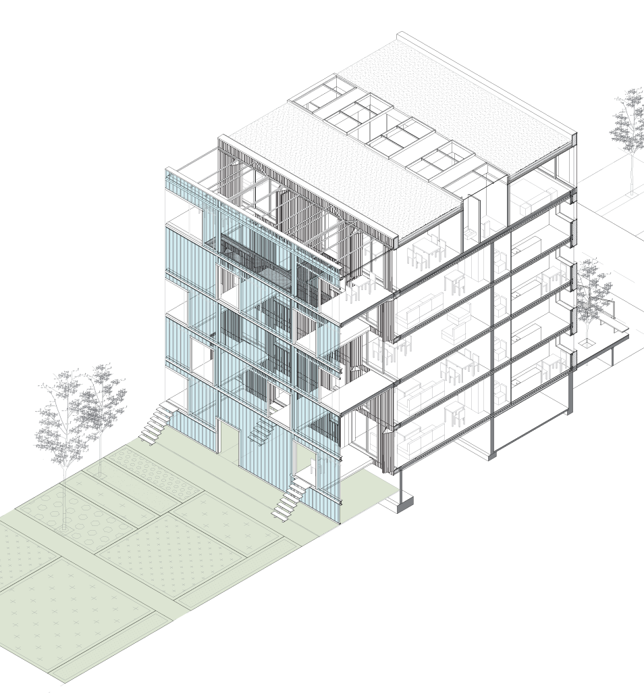
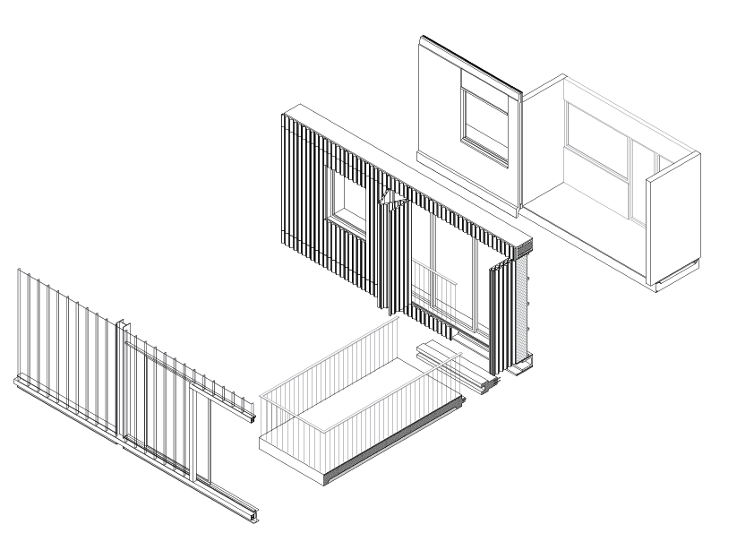
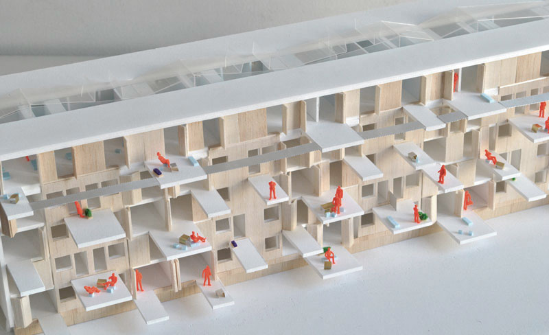
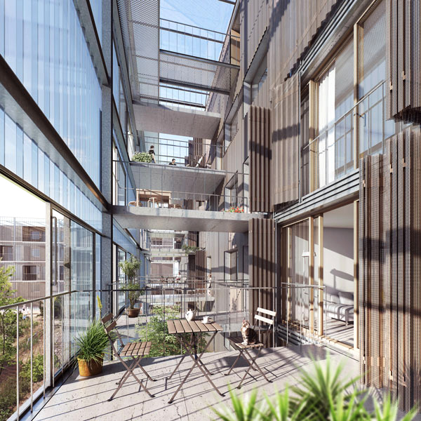
3) Density
The addition of new typologies to the existing blocks is an opportunity to positively increase the programmatic complexity of the housing estate. The diversity of the current array of typologies will be enriched with apartments of one and three bedrooms. These new typologies are designed to offer different spatial qualities from the existing, and can even mutate to accommodate different uses over time. The best feature is to be found in the core of the apartments, a convertible courtyard that brings natural light inside, and also functions as an active sustainable element.
The new layer of penthouses will have new access routes that will intersect and take advantage of the existing ones, by using two of the existing stair cores. The new flats will be fully accessible via a gallery connecting each new flat through a balcony, and with elevators at both ends of each building.
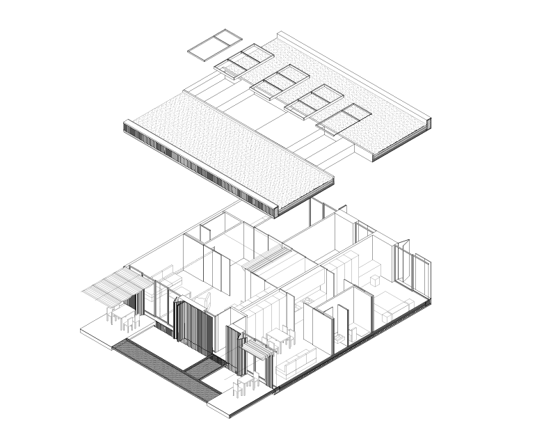
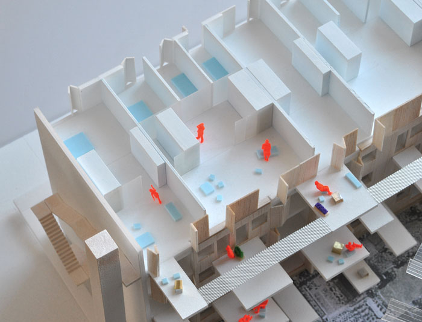
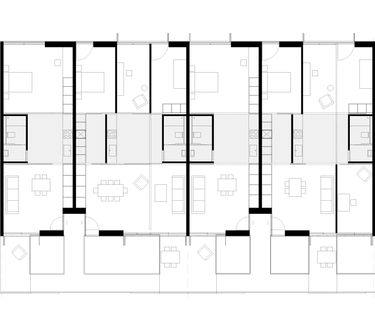
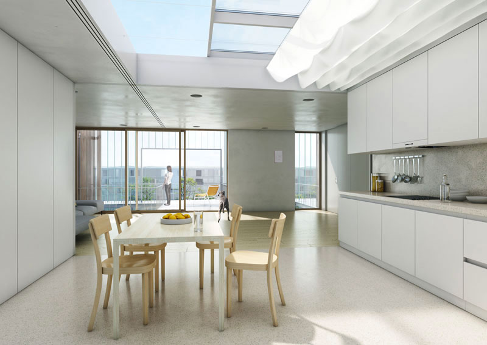
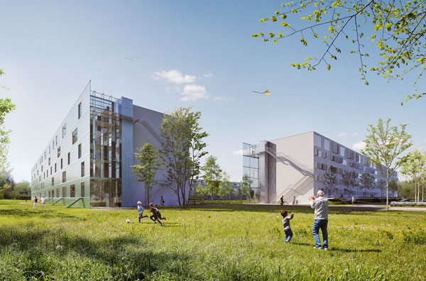
Team:
Architecture: João Moura Fagulha,
João Prates Ruivo,
Raquel Maria Oliveira, Beth Hughes.
Sustainability Consultant: TU+A - Raúl Moura.
Structural and Environmental Engineers: Quadrante Engenharia e Consultoria SA - João Costa, João Sousa.
Renders: Panoptikon - Tudor Vasiliu.
Client: Nordic Innovation.